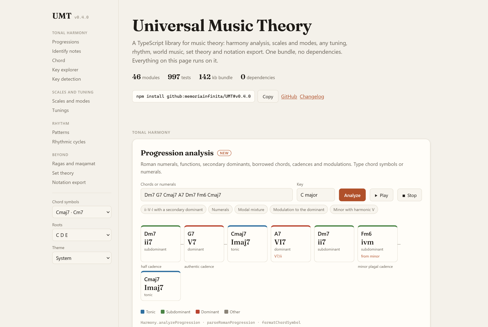
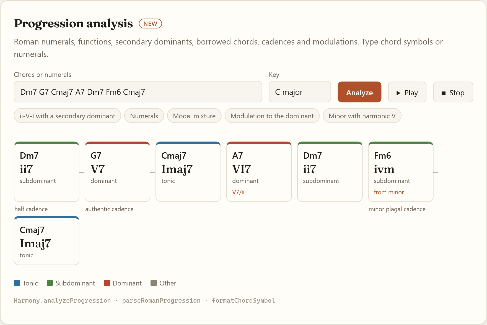
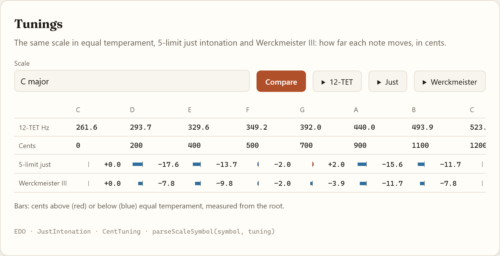
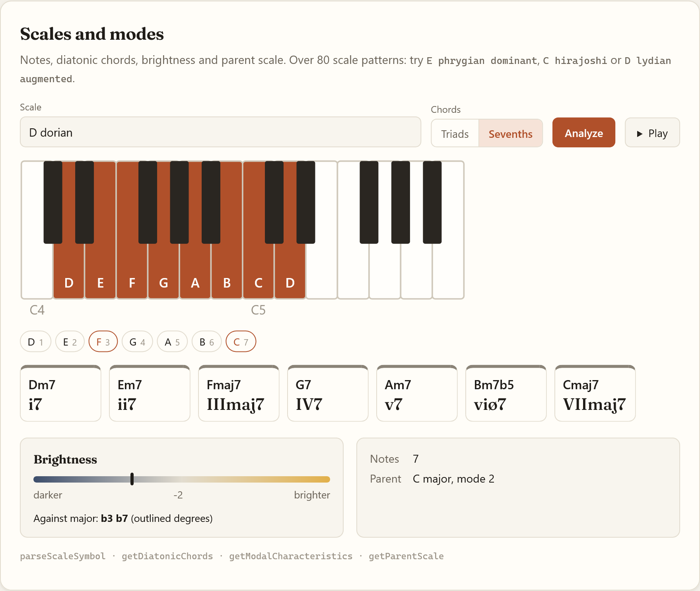
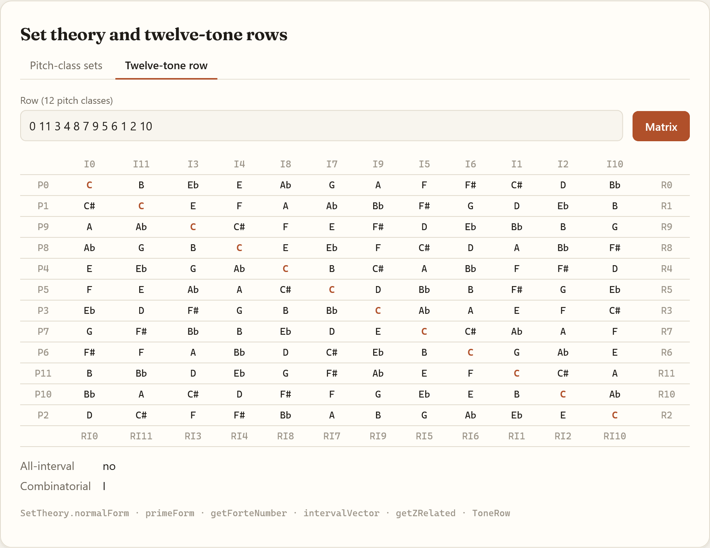
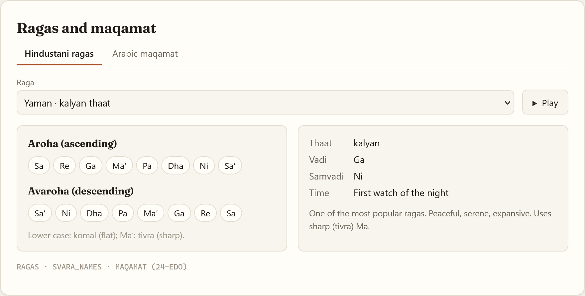
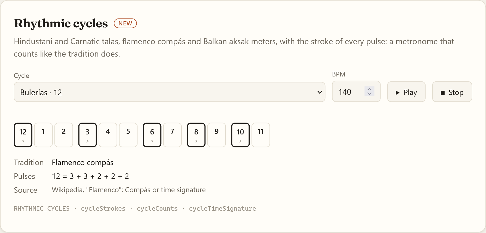
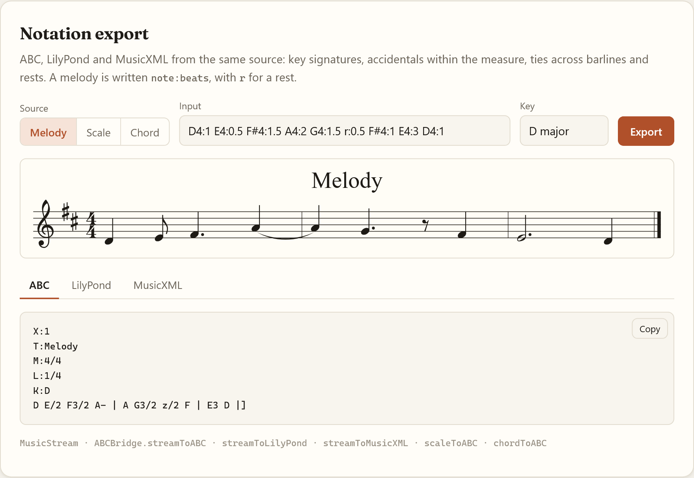

Universal Music Theory Library - v0.5.1
UMT
A TypeScript library for music theory computation that works across any tuning system - 12-TET, microtonal, historical temperaments, world music traditions, and post-tonal systems. Zero runtime dependencies. 142 kb compiled bundle (IIFE), plus an ESM build with bundled types.

What it does
Most music theory libraries are hardcoded to 12-TET. UMT is built around a universal
TuningSystem abstraction - every module works in any EDO, Just Intonation, or historical
temperament without modification.
// Same chord, three tuning systems
const cmaj = parseChordSymbol('C major', TET12);
const cmaj_ji = parseChordSymbol('C major', PtolemaicJI);
const cmaj_werck = parseChordSymbol('C major', WerckmeisterIII);
// Ragas and maqamat with quarter-tone accuracy
const bhairav = RAGAS['bhairav']; // aroha, avaroha, vadi, samvadi
const rast = MAQAMAT['rast']; // 24-EDO quarter-tone intervals
// Post-tonal analysis
const row = new ToneRow([0, 11, 3, 4, 8, 7, 9, 5, 6, 1, 2, 10]);
const matrix = row.getMatrix(); // 12x12 P/I/R/RI matrix
// Set theory with Forte catalogue
SetTheory.getForteNumber([0, 3, 6, 9]); // "4-28"
SetTheory.getZRelated([0, 1, 4, 6]); // Z-related sets
Installation
Releases are git tags (v0.5.1); pin one, since main may change. Breaking changes are listed in CHANGELOG.md.
Browser - CDN (jsDelivr)
<script src="https://cdn.jsdelivr.net/gh/memoriainfinita/UMT@v0.5.1/dist/umt.js"></script>
<script>
const chord = UMT.parseChordSymbol('Cmaj9');
console.log(chord.getNotes().map(n => n.name));
</script>
Browser - local
<script src="umt.js"></script>
npm (from GitHub) - ESM with types
npm install github:memoriainfinita/UMT#v0.5.1
import { parseChordSymbol, TET12, Harmony, SetTheory } from 'universal-music-theory-library';
Browser - ESM from the CDN
<script type="module">
import { parseChordSymbol } from 'https://cdn.jsdelivr.net/gh/memoriainfinita/UMT@v0.5.1/dist/umt.mjs';
</script>
Build from source
npm install
npm run build # dist/umt.js (IIFE), dist/umt.mjs (ESM), dist/umt.d.ts (types)
Modules
Core
| Module | What it does |
|---|---|
tuning.ts |
EDO, JustIntonation, CentTuning, NonOctaveTuning - the universal tuning abstraction |
note.ts |
Pitch as frequency, MIDI, and enharmonic name in any tuning |
interval.ts |
Interval math in cents and ratios |
parser.ts |
parseChordSymbol, parseScaleSymbol, parseNote, parseRomanProgression - all tuning-aware |
dictionaries.ts |
100+ chord formulas, 80+ scale patterns |
presets.ts |
Ready-to-use tuning systems, scales, chords |
utils.ts |
MIDI conversion, enharmonic spelling, interval naming |
Tonal harmony
| Module | What it does |
|---|---|
harmony.ts |
Voice leading, chord detection, negative harmony, cadences, borrowed chords, modal interchange, Coltrane axis |
chord.ts |
Voicings (drop2, drop3, quartal, rootless), inversions, tritone substitution, smooth transitions |
scale.ts |
Modes, diatonic chords, brightness, avoid notes, parent scale navigation |
circle.ts |
Circle of fifths - key signatures, relatives, neighbors, modal distance |
substitution.ts |
Chord substitutions (tritone, sus4, deceptive, diatonic) |
progressions.ts |
16 named progressions (ii-V-I, Coltrane changes, blues 12, rhythm changes...) |
form.ts |
Formal analysis - AABA, ABAB, binary, ternary, through-composed |
upper-structures.ts |
Upper structure triads, slash chord analysis, chord-scale completeness |
key-detection.ts |
Correlation key finding with five key profiles (Krumhansl-Kessler, Aarden-Essen, Bellman-Budge, Temperley-Kostka-Payne, simple) |
neo-riemannian.ts |
P, L, R transformations in any tuning |
figured-bass.ts |
Figured bass parsing and realization |
spelling.ts |
Pitches spelled in a key (harmonic chromatic scale), chord tones by interval |
voicing.ts |
Voicing analysis: inversion, close/open position, drop 2/3/2+4, doubled, omitted and added notes |
scale-finder.ts |
Every scale of the dictionary, on every root, that holds a set of notes, ranked |
chord-names.ts |
Chord symbol styles (Cmaj7 / CΔ7 / CM7), solfège roots; chord, scale, cadence and substitution names in English and Spanish |
Post-tonal
| Module | What it does |
|---|---|
set-theory.ts |
Normal/prime form, interval vector, Forte catalogue (223 set classes), Z-relations, Tn/TnI |
twelve-tone.ts |
Tone rows, P/I/R/RI forms, 12x12 matrix, all-interval and combinatorial detection |
counterpoint.ts |
Species counterpoint checker, Canon |
schenker.ts |
Basic Schenkerian reduction |
melody.ts |
Contour analysis, motif detection |
World music
| Module | What it does |
|---|---|
ragas.ts |
10 Hindustani ragas - aroha, avaroha, vadi, samvadi, time, description |
maqamat.ts |
8 Arabic maqamat in 24-EDO quarter-tone intervals |
solfege.ts |
Fixed-do and movable-do solfege |
hexachord.ts |
Guidonian hexachord system |
Rhythm
| Module | What it does |
|---|---|
rhythm.ts |
Euclidean rhythms, polyrhythm, metric modulation, isorhythm |
clave-patterns.ts |
10 clave presets (son, rumba, bossa nova, tresillo, habanera...) |
rhythmic-cycles.ts |
Hindustani and Carnatic talas, flamenco compás (bulerías, soleá, seguiriya), aksak meters |
Microtonal / Xenharmonic
| Module | What it does |
|---|---|
scala.ts |
Scala .scl file parser |
tonnetz.ts |
Tonnetz pitch space - position and navigation |
mos.ts |
Moment of Symmetry scales, MOS families, comma pumps |
xen.ts |
Otonal/utonal series, neutral intervals |
spectral.ts |
Roughness (Plomp-Levelt), sensory consonance, overtone series |
temperament-analysis.ts |
Temperament error analysis, EDO comparison, JI mapping |
voice-leading-geometry.ts |
OPTIC equivalences, efficient voice leading geometry (Tymoczko) |
Notation
| Module | What it does |
|---|---|
abc-bridge.ts |
Export scales, chords, and streams to ABC notation |
lilypond-bridge.ts |
Export scales, chords, and streams to LilyPond |
musicxml-bridge.ts |
Export scales, chords, and streams to MusicXML |
notation-layout.ts |
Shared by the exporters: spelling, key signatures, measures, ties and triplets |
Examples
Harmony analysis

import { parseChordSymbol, Harmony, getSubstitutions } from './lib/music-theory';
const chords = ['Dm7', 'G7', 'Cmaj7', 'A7', 'Dm7', 'Fm6', 'Cmaj7'].map(s => parseChordSymbol(s));
const { analysis } = Harmony.analyzeProgression(chords, 'C major');
analysis.map(a => a.roman);
// ['ii7', 'V7', 'Imaj7', 'VI7', 'ii7', 'ivm', 'Imaj7']
analysis[3].secondaryTarget; // 'V7/ii'
analysis[5].borrowedFrom; // 'minor'
analysis[1].cadenceWithNext; // 'Authentic Cadence (V -> I)'
const g7 = parseChordSymbol('G7');
Harmony.getSuggestedScales(g7)[0];
// { scale: 'G mixolydian', hint: 'standard V' }
getSubstitutions(g7, 'C major').map(s => `${s.chord.name} (${s.type})`);
// ['Db7 (tritone)', 'Gsus4 (sus4)', 'Am (deceptive)', 'Bm7b5 (diatonic)']
Harmony.getColtraneAxis('C major');
// { root: 'C', majorThirds: ['C', 'E', 'Ab'] }
Names for an interface in English or Spanish:
import { formatChordSymbol, chordLongName, scaleName, cadenceName, substitutionTypeName } from './lib/music-theory';
formatChordSymbol('F#m7b5', { style: 'symbols', roots: 'solfege' }); // 'Fa#ø7'
chordLongName('F#m7b5', 'es'); // 'Fa sostenido semidisminuido'
scaleName('G mixolydian', 'es'); // 'Sol mixolidio'
scaleName(analysis[5].borrowedFrom, 'es'); // 'menor'
cadenceName(analysis[1].cadenceWithNext, 'es'); // 'Cadencia auténtica (V -> I)'
cadenceName(analysis[1].cadenceWithNext, 'es', { short: true }); // 'Auténtica'
substitutionTypeName('tritone', 'es'); // 'tritonal'
Tuning

Modal analysis

import { parseScaleSymbol } from './lib/music-theory';
const scale = parseScaleSymbol('D dorian');
scale.getDiatonicChords('seventh');
// [Dm7, Em7, Fmaj7, G7, Am7, Bm7b5, Cmaj7]
const modal = scale.getModalCharacteristics();
// { brightness: -2, characteristicIntervals: ['b3', 'b7'] (against major), parentModeDegree: 2, ... }
scale.getParentScale(); // C major
scale.getRelativeMode('lydian'); // F lydian
Twelve-tone row

import { ToneRow } from './lib/music-theory';
const row = new ToneRow([0, 11, 3, 4, 8, 7, 9, 5, 6, 1, 2, 10]);
row.P(0); // prime form
row.I(0); // inversion
row.R(); // retrograde
row.RI(0); // retrograde inversion
row.getMatrix(); // 12x12 transformation matrix
row.isAllInterval(); // true if all 11 intervals are distinct
row.isCombinatorial(); // combinatoriality check
row.getHexachords(); // [first6, last6]
World music

import { RAGAS, MAQAMAT, CLAVE_PATTERNS } from './lib/music-theory';
// Hindustani raga
const bhairav = RAGAS['bhairav'];
bhairav.aroha; // ascending scale in semitones
bhairav.vadi; // primary note, a svara number (SVARA_NAMES[6] = 'Dha')
bhairav.time; // 'Early morning'
// Arabic maqam (24-EDO quarter-tones)
const rast = MAQAMAT['rast'];
rast.notes; // interval pattern in quarter-tones
rast.ajnas; // constituent tetrachords
// Clave rhythm
const clave = CLAVE_PATTERNS['son-3-2'];
clave.steps; // boolean[16] - onset pattern
Rhythm

import { RHYTHMIC_CYCLES, cycleCounts, cycleStrokes, Polyrhythm } from './lib/music-theory';
const bulerias = RHYTHMIC_CYCLES.bulerias;
cycleCounts(bulerias); // [12, 1, 2, 3, ... 11]
cycleStrokes(bulerias); // ['accent', 'beat', 'beat', 'accent', ...]
cycleStrokes(RHYTHMIC_CYCLES.teental)[8]; // 'khali'
Polyrhythm.euclidean(5, 8); // [true, false, true, true, false, true, true, false]
Notation export

import { parseScaleSymbol, ABCBridge, scaleToLilyPond, scaleToMusicXML } from './lib/music-theory';
const scale = parseScaleSymbol('D dorian');
ABCBridge.scaleToABC(scale, 1, 'D dorian'); // ABC notation, accidentals against K:Ddor
scaleToLilyPond(scale); // LilyPond source
scaleToMusicXML(scale); // MusicXML document
Architecture
Coordinate system: all pitch positions are steps from A4 = 0. A4 = 440 Hz = step 0. C4 = -9 in 12-TET.
Tuning abstraction: parseChordSymbol, parseScaleSymbol, and parseRomanProgression accept an optional TuningSystem parameter (default: TET12). Interval values from the dictionaries are mapped to the target tuning via tuning.getStepFromStandard().
Enharmonic spelling: the library uses circle-of-fifths logic to choose flats vs. sharps - not a hardcoded list. preferFlats is stored per Note and propagated through all transformations. Interval-based overrides ensure m3, m7 etc. are always spelled as flat-side intervals regardless of key. Heptatonic scales are spelled one letter per degree, so F# major contains E# and D harmonic minor contains C#; their diatonic chords take the same letters (E#dim).
Tests
npm run test:unit # 1007 unit tests via vitest, one file per module
npm run typecheck # TypeScript type checking
License
GPL-3.0. Created for people, not for corporate profit. Any software using this library must also remain free and open. See LICENSE.
Credits
Developed by @memoriainfinita with the assistance of Claude (Anthropic): Opus 4.8, Sonnet 4.6 and Fable 5.